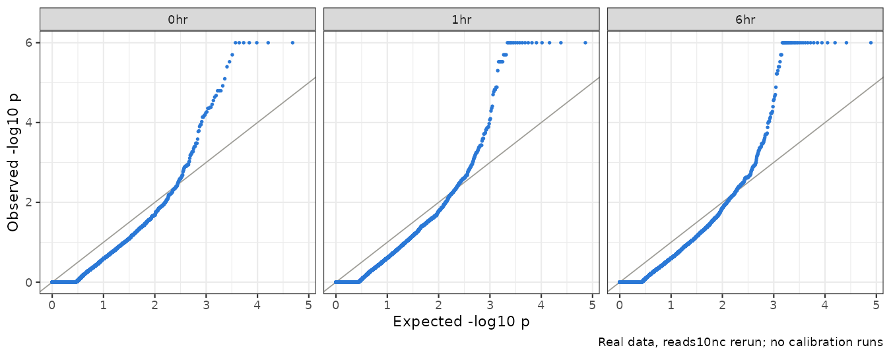

Last updated: 2026-10-23
Checks: 6 1
Knit directory: long_read_rna/
This reproducible R Markdown analysis was created with workflowr (version 1.7.0). The Checks tab describes the reproducibility checks that were applied when the results were created. The Past versions tab lists the development history.
The R Markdown is untracked by Git. To know which version of the R
Markdown file created these results, you’ll want to first commit it to
the Git repo. If you’re still working on the analysis, you can ignore
this warning. When you’re finished, you can run
wflow_publish to commit the R Markdown file and build the
HTML.
Great job! The global environment was empty. Objects defined in the global environment can affect the analysis in your R Markdown file in unknown ways. For reproduciblity it’s best to always run the code in an empty environment.
The command set.seed(20260908) was run prior to running
the code in the R Markdown file. Setting a seed ensures that any results
that rely on randomness, e.g. subsampling or permutations, are
reproducible.
Great job! Recording the operating system, R version, and package versions is critical for reproducibility.
Nice! There were no cached chunks for this analysis, so you can be confident that you successfully produced the results during this run.
Great job! Using relative paths to the files within your workflowr project makes it easier to run your code on other machines.
Great! You are using Git for version control. Tracking code development and connecting the code version to the results is critical for reproducibility.
The results in this page were generated with repository version 7b8c554. See the Past versions tab to see a history of the changes made to the R Markdown and HTML files.
Note that you need to be careful to ensure that all relevant files for
the analysis have been committed to Git prior to generating the results
(you can use wflow_publish or
wflow_git_commit). workflowr only checks the R Markdown
file, but you know if there are other scripts or data files that it
depends on. Below is the status of the Git repository when the results
were generated:
Untracked files:
Untracked: analysis/isolaser_fdr_panel10nc.Rmd
Untracked: analysis/isolaser_fdr_reads10nc.Rmd
Unstaged changes:
Modified: analysis/isolaser_fdr_panel10.Rmd
Modified: analysis/isolaser_fdr_reads10.Rmd
Note that any generated files, e.g. HTML, png, CSS, etc., are not included in this status report because it is ok for generated content to have uncommitted changes.
There are no past versions. Publish this analysis with
wflow_publish() to start tracking its development.
This page repeats the read-based rerun without one rule of the tested family, the clustering rule. That rule leaves out any variant with another candidate variant within 30 bases. Everything else is unchanged, and the reads10 page and its results are unchanged.
What changed (our definitions):
cis
/ |ΔPSI| ≥ 0.10 screen.Main result: 45 associations in 22 genes have q < 0.05 and pass the screen, against 42 in 19 genes in the reads10 rerun. No association reported there is lost here. 5 association × timepoint results are gained, in 3 genes; 3 of these genes are not reported in the reads10 rerun at all (ENSG00000289047, FLOT1, HLA-C). All gained genes lie in the MHC, so the read-based results hardly depend on the clustering rule.
| Timepoint | Tested associations | Paper’s cutoff | Screen | Screen + q < 0.10 | Screen + q < 0.05 |
|---|---|---|---|---|---|
| 0hr | 24,226 | 6,244 (751) | 133 (77) | 19 (10) | 11 (6) |
| 1hr | 36,214 | 5,866 (961) | 224 (124) | 21 (12) | 20 (11) |
| 6hr | 39,138 | 6,396 (1,065) | 263 (146) | 31 (15) | 26 (13) |
| any timepoint | 46,684 | 12,880 (1,719) | 559 (281) | 57 (28) | 45 (22) |
Cells other than Tested associations show
associations (genes). Paper’s cutoff:
isoLASER’s own cis call with no other filter, as in the
isoLASER paper; it does not depend on our family rules, so it is the
same as on the reads10 page. Screen (our definition),
before FDR control: among the tested associations, isoLASER’s
cis rule computed on the panel-heterozygous donors only,
plus |ΔPSI| ≥ 0.10. Any timepoint counts each gene or
association once across timepoints. BH targets FDR within each
timepoint’s full family; the effect-filtered subset and the union across
timepoints have no separate 5% FDR guarantee.
| Timepoint | Tested: reads10 | Tested: this run | Screen + q < 0.05: reads10 | Screen + q < 0.05: this run | Kept | Gained | Lost |
|---|---|---|---|---|---|---|---|
| 0hr | 21,695 | 24,226 | 10 (5) | 11 (6) | 10 | 1 | 0 |
| 1hr | 31,944 | 36,214 | 18 (9) | 20 (11) | 18 | 2 | 0 |
| 6hr | 34,250 | 39,138 | 24 (11) | 26 (13) | 24 | 2 | 0 |
| any timepoint | 40,879 | 46,684 | 42 (19) | 45 (22) |
Kept / Gained / Lost count reported associations at each timepoint: reported in both runs, only here, or only in the reads10 rerun. Dropping the rule adds 14% more tested associations; every association tested in the reads10 rerun is tested here too.
These are the associations the clustering rule had removed. Each one’s variant has at least one other candidate variant within 30 bases, a neighbour:
| Timepoint | Newly tested | Neighbours: panel variants only | Neighbours: unsupported calls only | Neighbours: both kinds |
|---|---|---|---|---|
| 0hr | 2,531 | 1,753 | 708 | 70 |
| 1hr | 4,270 | 2,745 | 1,344 | 181 |
| 6hr | 4,888 | 3,174 | 1,564 | 150 |
A neighbour is a panel variant if our genotype panel has a single matching, well-genotyped record (typed, or imputed with R² ≥ 0.8), whatever the donors’ genotypes. It is an unsupported call if the panel has no such record, or if it is not a single-base variant. Most newly tested variants sit next to real panel variants, that is, two real SNPs close together.
| Timepoint | Gene | Variant | Exonic part | Het donors | ΔPSI | q | q in reads10 | Neighbours | MHC |
|---|---|---|---|---|---|---|---|---|---|
| 0 hr | HLA-C | chr6:31269076:T>C | chr6:31269965-31270085:- | 1 | +0.25 | 0.0380 | not tested | unsupported calls only | yes |
| 1 hr | ENSG00000289047 | chr6:32894904:C>T | chr6:32894927-32895026:+ | 2 | +0.64 | 0.0021 | not tested | panel variants only | yes |
| 1 hr | FLOT1 | chr6:30741579:G>A | chr6:30741867-30742146:- | 2 | -0.40 | 0.0230 | not tested | unsupported calls only | yes |
| 6 hr | ENSG00000289047 | chr6:32894904:C>T | chr6:32894927-32895026:+ | 2 | +0.72 | 0.0014 | not tested | panel variants only | yes |
| 6 hr | HLA-C | chr6:31269076:T>C | chr6:31269965-31270085:- | 1 | +0.15 | 0.0067 | not tested | unsupported calls only | yes |
q in reads10: “not tested” for associations the clustering rule removed; a value means the association was tested there and missed q < 0.05. Neighbours describes the candidate variants within 30 bases, as above. MHC: inside the major histocompatibility complex (chr6:28.5–33.5 Mb), the most polymorphic region of the genome, where reads are often misaligned. Download the gained associations with each neighbour listed.
All 5 gained results come from three genes in the MHC, and the clustering rule had removed every one of them:
So with read-based labels the clustering rule removes 11,689 testable associations (summed over timepoints), but almost no signal outside the MHC (our reading).
Genes. Reported in both runs: 19. Only in the reads10 rerun: 0. Only here: ENSG00000289047, FLOT1, HLA-C. Download the gene comparison.
The test is the one described on the original page, with the donor rule and remaining family rules of the reads10 rerun.
| Timepoint | Stopped at 1,000 | Stopped at 10,000 | Stopped at 100,000 | Reached 1,000,000 |
|---|---|---|---|---|
| 0hr | 23,971 | 182 | 38 | 35 |
| 1hr | 35,804 | 304 | 58 | 48 |
| 6hr | 38,655 | 366 | 58 | 59 |
Stopped means at least 20 hits at that checkpoint, or no observed score (p = 1). Every association with zero hits after a million shuffles has q < 0.05, so more shuffles would not change the results.

Real data only; there are no calibration runs for this rerun.
We apply the same two conditions as the reads10 page: reported only after stimulation (at 1 or 6 hours, not at 0 hours), and neuron- or stimulation-related. 7 genes meet both. Four are shown, the same four as on the reads10 page. Not shown: C20orf96 and ENSG00000290928, as on that page, and the new FLOT1 (synapse and synaptic-signaling GO terms), which has no score at 0 hours and lies in the MHC next to an unsupported call.
| Gene | 0 hr | 1 hr | 6 hr | Best q | Het donors | Relevance |
|---|---|---|---|---|---|---|
| PARK7 | -8 (628) | -19 (1,034) | -10 (1,024) | 0.0021 | 2 | Neuron projection, neuron death (GO); the Parkinson’s disease gene DJ-1 |
| PPA2 | +21 (72) | +46 (107) | +18 (125) | 0.0043 | 3 | Splicing after stimulation (our scan); a GTEx Cerebellum sQTL for this exon |
| LY6H | +15 (180) | +14 (363) | +25 (362) | 0.0014 | 2 | Synaptic signaling (GO) |
| ZNF749 | -26 (88) | -8 (81) | -74 (127) | 0.0014 | 3 | Splicing after stimulation (our scan), at this exon’s donor sites |
0 / 1 / 6 hr: allelic effect in percentage points, alternative minus reference inclusion, with pooled informative coverage in brackets. Best q: the lowest timepoint-specific q-value. Het donors: the largest number of panel-heterozygous donors used, out of four.
For each of these genes the representative association, its donors and its reads are the same as in the reads10 rerun (4 of 4 checked). Only the q-values change slightly with the larger family. Their permutation tests, read alignments and isoform figures are on the reads10 page.
Here, reported means q < 0.05 plus the
cis / effect-size screen.
| Pattern | Genes |
|---|---|
| Significant at 3 timepoints | 2 |
| Significant at 2 timepoints | 4 |
| One timepoint; nominal support elsewhere | 10 |
| One timepoint; no nominal support elsewhere | 4 |
| One timepoint; no usable score elsewhere | 2 |
For genes reported at one timepoint, the last three categories describe the representative association at the other timepoints: nominal p < 0.05, p ≥ 0.05 where scored, or no usable score. They are not tests of an allele × time interaction. Among comparisons of significant associations with another timepoint, 82% had nominal p < 0.05 there and 100% had the same effect direction.
All 22 reported genes. The variant, part, timepoint effects, best q and donor count refer to the representative association; Significant at describes the gene across all its associations. In reads10 marks genes also reported in the reads10 rerun.
0 / 1 / 6 hr: allelic effect in percentage points, alternative minus reference inclusion, with pooled informative coverage in brackets. The annotations use the same rules as on the original page.
Data: 10.isolaser_permutation/ with
ADAPTIVE_RULE=reads10nc: run by
logs/family_rule_driver.sh reads10nc (scripts 38 and 18–22,
with the independent score check 48 / 50), and compared with the reads10
rerun by 53.compare_family_rules.R. This page’s tables come
from 11.fdr_results/3.page_tables.R with
ADAPTIVE_RULE=reads10nc, which writes only to
docs/assets/fdr_reads10nc/.
R version 4.2.0 (2022-04-22)
Platform: x86_64-pc-linux-gnu (64-bit)
Running under: Red Hat Enterprise Linux 8.4 (Ootpa)
Matrix products: default
BLAS/LAPACK: /software/openblas-0.3.13-el8-x86_64/lib/libopenblas_skylakexp-r0.3.13.so
locale:
[1] LC_CTYPE=C.UTF-8 LC_NUMERIC=C LC_TIME=C.UTF-8
[4] LC_COLLATE=C.UTF-8 LC_MONETARY=C.UTF-8 LC_MESSAGES=C.UTF-8
[7] LC_PAPER=C.UTF-8 LC_NAME=C LC_ADDRESS=C
[10] LC_TELEPHONE=C LC_MEASUREMENT=C.UTF-8 LC_IDENTIFICATION=C
attached base packages:
[1] stats graphics grDevices utils datasets methods base
other attached packages:
[1] DT_0.22 data.table_1.14.4 workflowr_1.7.0
loaded via a namespace (and not attached):
[1] Rcpp_1.0.11 compiler_4.2.0 pillar_1.9.0 bslib_0.3.1
[5] later_1.3.0 git2r_0.30.1 jquerylib_0.1.4 tools_4.2.0
[9] getPass_0.2-2 digest_0.6.29 jsonlite_1.8.7 evaluate_0.15
[13] lifecycle_1.0.4 tibble_3.2.1 pkgconfig_2.0.3 rlang_1.1.2
[17] cli_3.6.2 rstudioapi_0.14 crosstalk_1.2.0 yaml_2.3.5
[21] xfun_0.38 fastmap_1.1.0 httr_1.4.5 stringr_1.5.0
[25] knitr_1.42 htmlwidgets_1.6.2 sass_0.4.1 fs_1.5.2
[29] vctrs_0.6.1 rprojroot_2.0.3 glue_1.6.2 R6_2.5.1
[33] processx_3.5.3 fansi_1.0.3 rmarkdown_2.21 callr_3.7.0
[37] magrittr_2.0.3 whisker_0.4 ellipsis_0.3.2 ps_1.7.0
[41] promises_1.2.0.1 htmltools_0.5.7 httpuv_1.6.5 utf8_1.2.2
[45] stringi_1.7.6